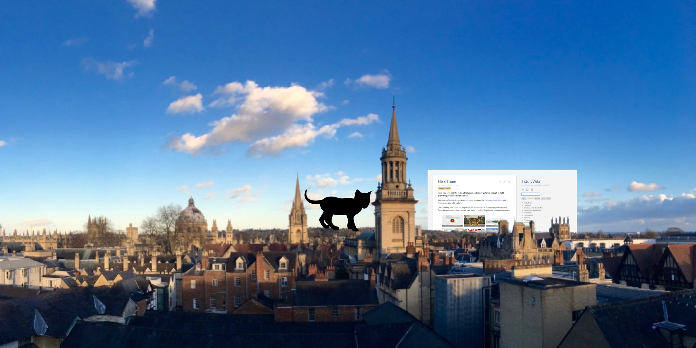

Welcome to the website for the TiddlyWiki European Meetup 2016.
Compare the static HTML and interactive renderings of this site

We've been discussing potential agenda items on a public Trello board.
We plan to live stream the meetup via Google Hangouts. In the meantime, see a playlist of previous hangouts:
The meetup is being held in the community meeting room at the Oxford Centre for Innovation.
New Road,
Oxford,
Oxfordshire
OX1 1BY
Tel 01865 261400
Source code: https://github.com/Jermolene/tiddlywiki-eu-meetup-2016
TiddlyWiki is a rich, interactive tool for manipulating complex data with structure that doesn't easily fit into conventional tools like spreadsheets or word-processors.
TiddlyWiki is designed to fit around your brain, helping you deal with the things that won't fit. The fundamental idea is that information is more useful and reusable if we cut it up into the smallest semantically meaningful chunks – tiddlers – and give them titles so that they can be structured with links, tags, lists and macros. Tiddlers use a wiki text notation that concisely represents a wide range of text formatting and hypertext features. TiddlyWiki aims to provide a fluid interface for working with tiddlers, allowing them to be aggregated and composed into longer narratives.
Find out more at http://tiddlywiki.com/